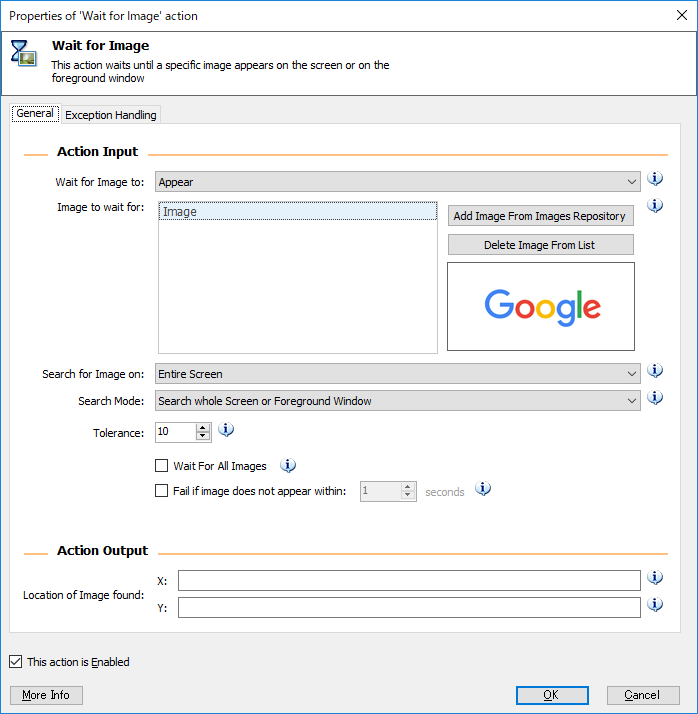
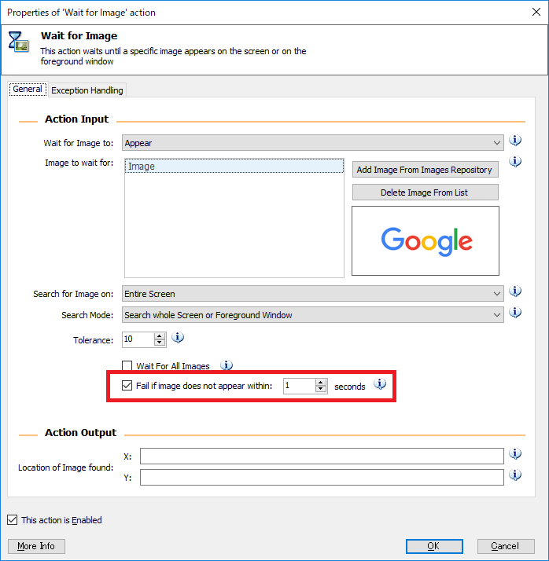

-
チュートリアル（基礎）
- RPA、RDAとは
- WinAutomationとは
- セットアップ手順
- コンソールの操作方法
- Task1 コンソールを操作してみましょう
- ProcessDesignerの操作方法
- 基本アクションについて
- Task2 アクションを設定してみましょう
- トリガー設定
- Task3 トリガーを作成してみましょう
- スケジューラー設定
- Task4 スケジューラーを作成してみましょう
- EXCEL操作
- Task5 EXCELを操作してみましょう
- マクロレコーダー
- Task6 アプリケーションを操作してみましょう
- Webレコーダー
- Task7 Webサイトを操作してみましょう
- 画像認識
- Task8 画像認識で処理を作成してみましょう
- 例外処理
- アクション一覧
- サンプル
- FAQ
- トラブルシューティング
例外処理
ロボットを動かす際、想定したデータ形式と異なる、サイトのURLが変わったなど、様々な要因でエラーとなる可能性があります。
WinAutomationでは各アクションに対して、エラー発生時にどういった処理を行うかの設定が可能です。
ここでは例外処理に関する基礎的な内容を学びます。
アクションに対する例外の設定
Wait for Imageアクションを例題に例外の設定を行います。
ブラウザを起動し、GoogleやYahoo!Japanなどのページを開きます。
Wait for Imageアクションを配置し、対象の画像にロゴを設定します。
Fail if image does not not appear withinにチェックを入れ、秒数を1秒に設定します。
Display Messageアクションを配置し、任意のメッセージが出来るように設定します。
ブラウザを終了し、実行。
エラーになることを確認します。Wait for Imageアクションを配置し、Exeption Handlingタブを開きます。
Continue Process Executionにチェックを入れ、Go to next actionを選択します。
再度ロボットを実行し、エラーが発生しないことを確認します。
例外設定の概要
If an exeption occurs
Retry Actionにチェックを入れることで、リトライを行うことが出来ます。
表示に時間がかかっているために処理できない場合があるなどに有効です。Exeption handling rules for
特定のエラーが発生した場合に限り、例外処理を行いたい場合に設定します。
指定可能なExeptionの種類はアクションごとに決まっています。Set Variable
例外発生時に変数を設定したい場合に設定します。
エラー有無によって、何らかの分岐を行いたい場合などに使用します。Run another Process
例外発生時に別プロセスを実行したい場合に設定します。
共通エラープロセスを別に準備している場合などに使用します。Run Function
例外発生時に別ファンクション処理を実行したい場合に設定します。 エラーメール送信などに使用します。Continue Process Execution
- Go to next action
例外を無視して次に進みます。 - Repeat action
処理を再度実行します。 - Go to label
指定したラベルに移動します。
- Go to next action